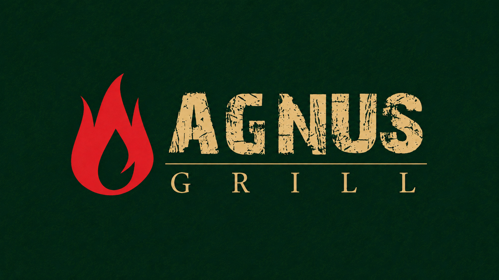
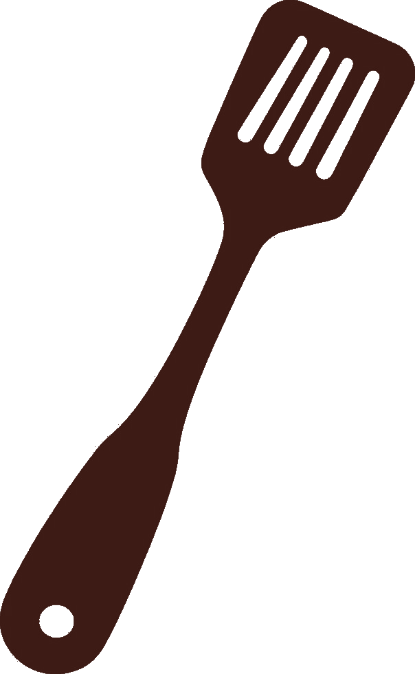

Clássica
RodízioMussarela
Queijo, molho de tomate e orégano.

Escolha o caminho principal da mesa: pizzas saindo do forno ou espetinhos na brasa, com organização simples para pedir sem se perder.
Rodízios pensados para grupo, família e noite de Passaré, com sabores clássicos e especiais.
Buffet organizado por estações simples: proteínas, bases, guarnições e saladas, para o cliente montar o prato rapidamente.

Pratos montadosPratos individuais e opções para dividir, com brasa, massas, parmegianas e petiscos.
Opções geladas para almoço, rodízio e noite de grill.
Clássicos para fechar o almoço ou o rodízio.
Rodízio, self-service e pratos à la carte no Passaré.
Av. Prudente Brasil, 33 - Passaré
Segunda: 11h - 15h
Terça a domingo: 11h - 22h30
(85) 9688-7457
@agnusgrill
Rodízio de pizzas, rodízio de espetinhos, self-service e à la carte.
Passaré, Fortaleza - CE